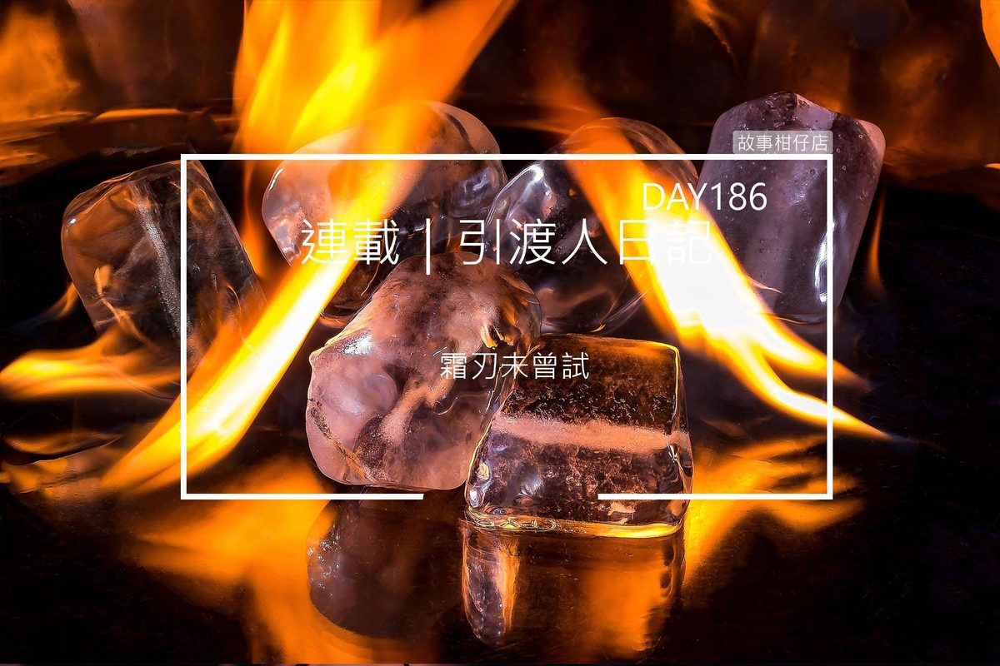

引渡人日記 day 186（四）霜刃未曾試

「我可以讓。但地府，決不是你能來去自如之地。」
白姐昂起下巴，一臉倔強。即使比起夏霜，她的身型瘦小得多，卻不見她有絲毫害怕。
夏霜舉著大刀，踩過血脂膿水，往我們這步步逼近。直到他與白姐擦身而過，白姐的背影仍舊動也不動，我心想她是被盜帳號了不成？難道就這樣放他走？
當那龐大身軀走過我身邊時，他拋下一句話：「百憂，歸隊吧。」
此時白姐倏地轉身，厲聲喝道：
「使喚我屬下，得先問我肯不肯！」
她直往夏霜衝去，夏霜不為所動，仍背對著我們。他停下腳步，冷不防舉起掛雪彎刀往後畫出個半圓，森冷寒氣如箭般射向白姐。白姐持扇一擋，擋掉了八成，手背卻扎進了一排冰鑽，不出眨兩眼的時間，周圍的皮膚便泛起青紫。
隨著他畫出那刀，整個空間扭曲變形，四周地獄小房間全不見了，化為一片大漠，空中高掛十個烈日，曬得天地枯草盼春。
愈來愈熱，我熱得口乾舌燥，直想喝水。白姐也滿頭大汗，那青紫卻迅速蔓延上她的手臂，凍出密密麻麻的瘡。
夏霜拖著刀頭也不回，刀鋒劃過地面，割出一條冒著熱氣裂縫。白姐咬牙推開我，握著羽扇再度衝上前，夏霜故技重施揮起彎刀，只見白姐忽然雙膝一屈，羽扇划出半圓金光，削過夏霜膝蓋後方。
鋼鐵鎧甲居然被柔軟羽扇削出裂隙，從那縫間可見一同被切開的血肉。然而，受傷的不只夏霜，白姐手臂的凍瘡開始破裂，逐個冒出血絲，痛得她將下唇也咬得滲出血珠。
雙膝筋脈被割斷的夏霜，勉力保持平衡，他徐徐轉過身來，面容枯槁得就像身後的荒漠。
顫抖著，他一步一步靠近，將彎刀往白姐腦袋削去，羽扇順風轉舵，別開了當頭利刃，卻見夏霜張大嘴，吐出數以萬計的燒蟬。
傾刻間，蟬鳴大作，燒蟬極有秩序排成一列往白姐眼睛飛去。情急之下，我只得抽出哭喪棒來擋，護住她的眼，卻救不了手。
翅翼綴火的燒蟬牢牢吸住白姐皮膚凍瘡，燙出褐色凹洞，痛得她恨不得將手砍斷。
幹你娘這死無人哭的！管你上輩子是不是我兄弟，恁爸跟你拼了！
我握緊哭喪棒，不要命似的衝向夏霜，他擎刀戳破我衣領，將我高高舉起抵在牆上。
無計可施，我洩恨似的用哭喪棒狠狠打了刀柄，發出響亮鏗鏘聲。
霎那間，我以為自己出現幻覺，黑哥居然像一陣煙似的出現在夏霜身後！
「臭小子，叫你別用哭喪棒還真的不用啊？！害我現在才出場！平常不是很背骨嗎？！」
三小？原來只要敲一敲就可以救出黑哥喔？！那我之前在難過幾點的？
黑哥理理草帽，待夏霜一轉身，他便撒出破煞鏈，緊緊纏住敵人脖頸與四肢。被牽制成大字形的夏霜手一鬆，我順勢滾落在地趕緊扶起白姐。
絲毫沒有遲疑，白姐弓步向前，如一出鞘的劍，羽扇拂過破煞鏈，一道金光沿著鏈爬上夏霜四肢，鎖結處閃出銳利星芒，夏霜仰天怒吼，手腳躁動，整個天地彷彿也跟著震動起來。眼見他就要掙脫破煞鍊，我連忙抬起掉落在旁的掛雪彎刀，刃端對準他膝蓋後甩去。
這一下，筋脈盡斷，他雙腿血流如注，終於膝頭哐瑯跪地，一聲聲撕心裂肺的吼叫劃破烈日當空。白姐見狀，彈指射出魄散針，咻咻插進夏霜眼窩、喉頭，以及眉心上那枚鮮紅八卦。
十個太陽逐個殞落，荒漠又化為熟悉的第三殿，飛舞的燒蟬也不見了。方才那威風凜凜的凶神夏霜，如今只剩一副破鎧甲跪在刮脂小地獄前。
「小黑，幸好你來了。」白姐攏攏鬆亂髮絲，看著黑哥，欲言又止。
「我一直都在，只是李勇這小子沒讓我出來啊！」黑哥笑道。幹，第一次覺得他這麼帥。
我們準備出去找日夜遊會合之時，身後傳來「砰！」一聲。
原來是夏霜重心不穩，上半身伏趴在地，他的臉就這麼浸在那灘血脂膿水中。
「那便是我日日夜夜在地獄受的苦。」
我想起他最初說的話，不由得心頭一陣酸，他現在應該也覺得很冷吧。